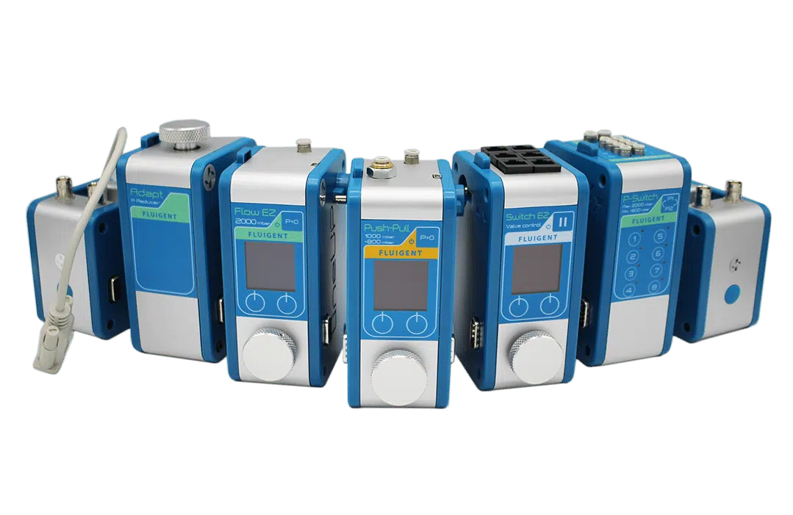
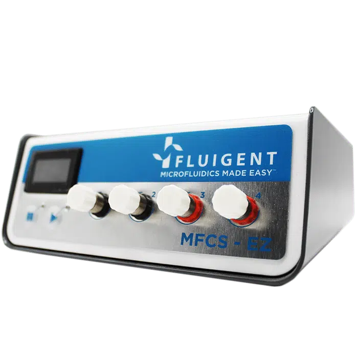
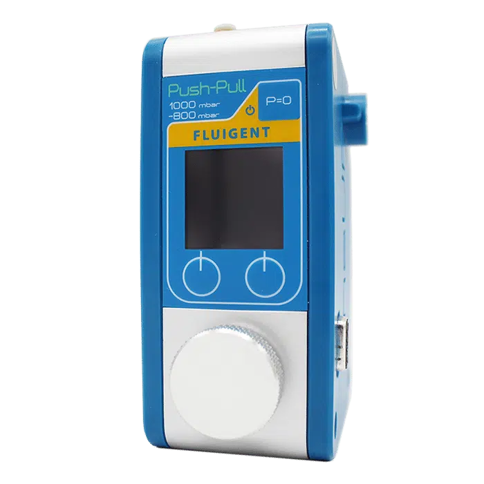
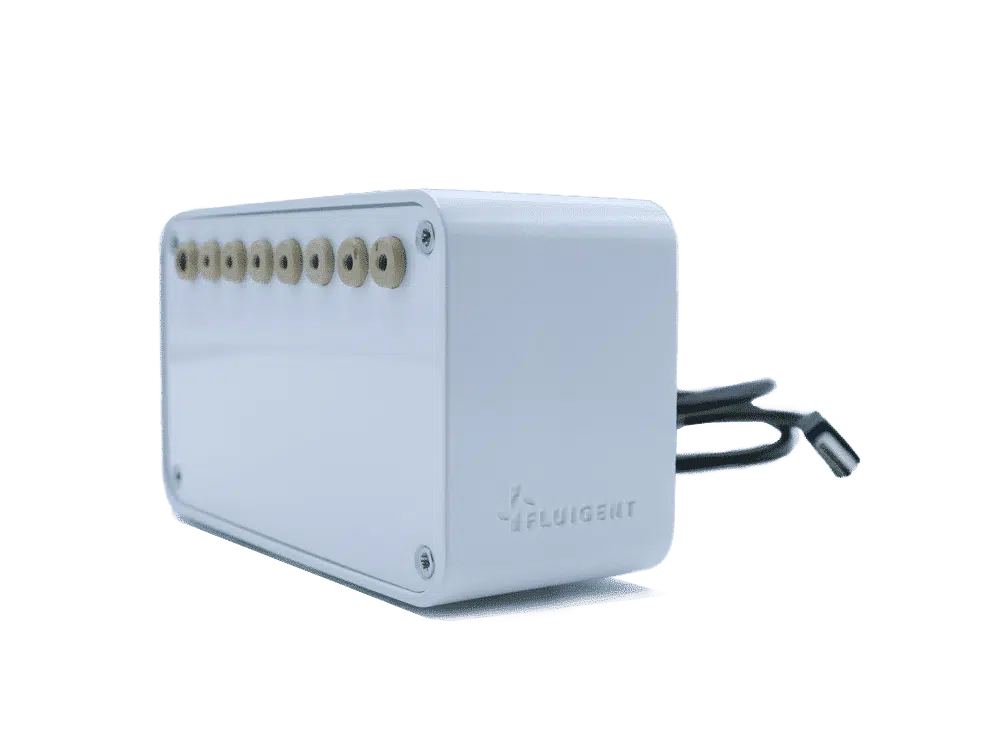
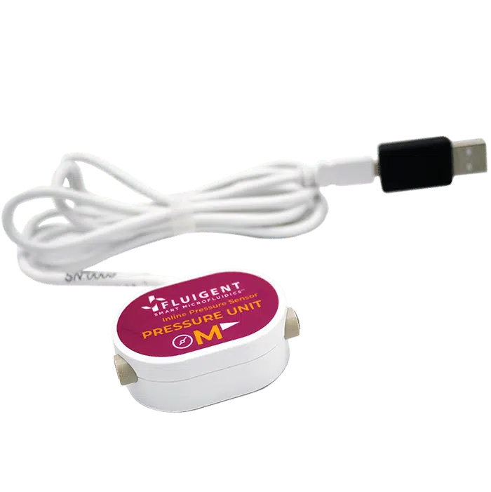
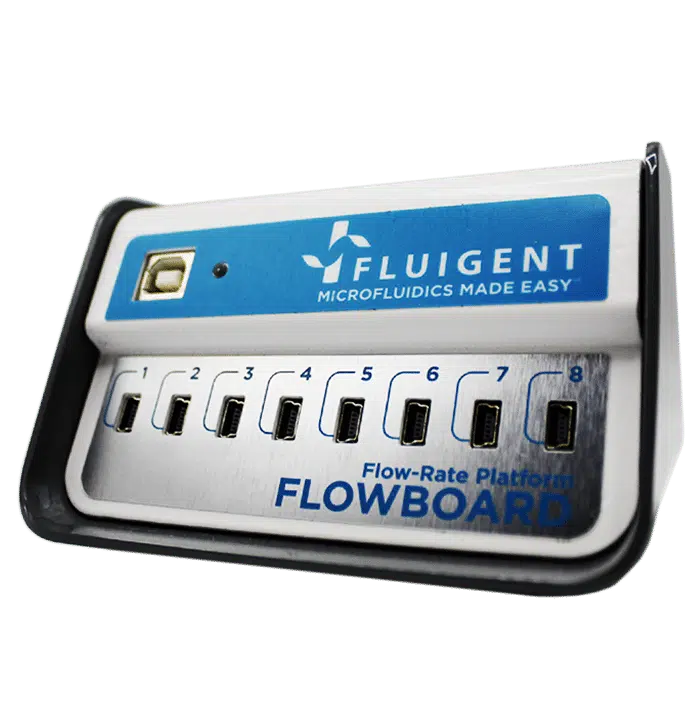
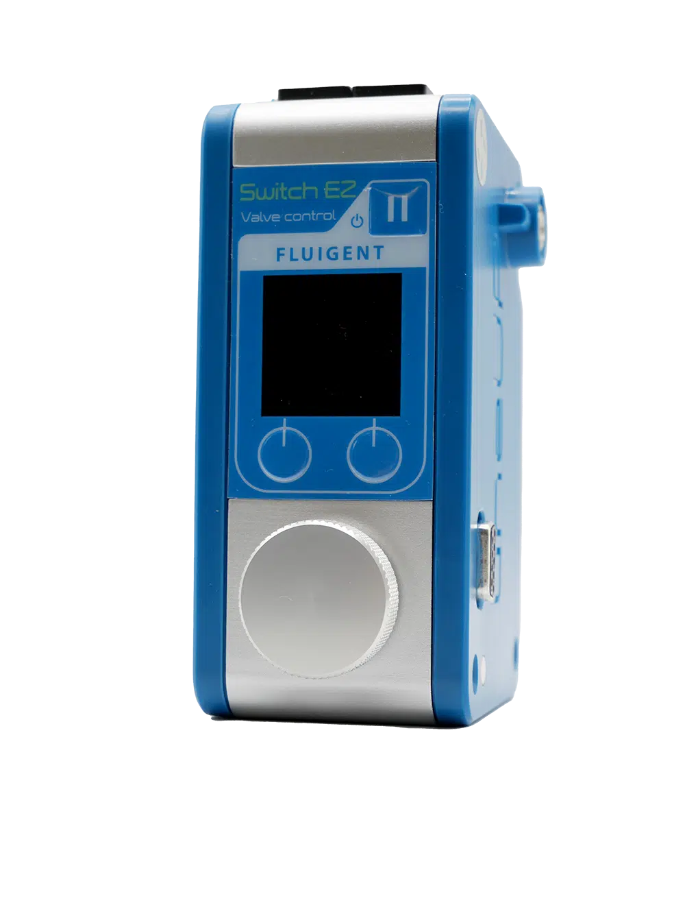
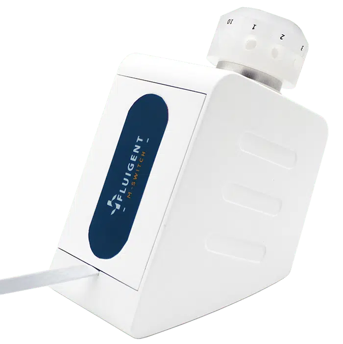
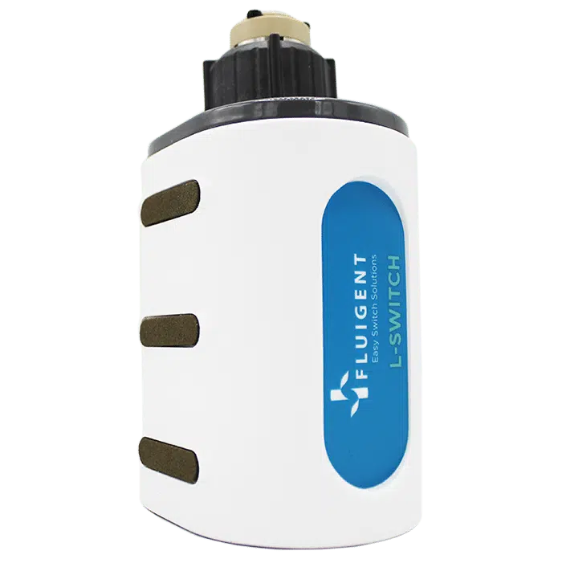
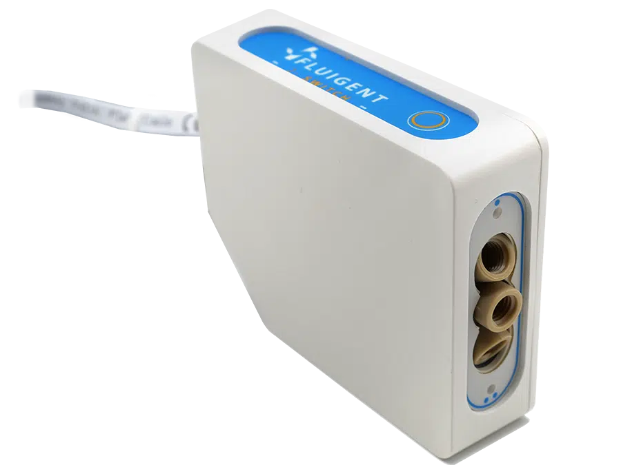

Flow and pressure range
Define minimum controllable flow, maximum pressure, stability, and transient response.

Pumps and flow control
Compare syringe pumps, peristaltic pumps, pressure controllers, valves, flow sensors, and pressure sensors for research microfluidic systems.

Selection answer
Use a syringe pump for direct programmed displacement, a pressure controller for responsive low-pulsation flow, and a peristaltic pump when tubing-only wetted paths or recirculation matter. Final selection depends on flow range, pressure, fluid properties, pulsation tolerance, feedback needs, and channel resistance.
Technical content reviewed by Snehan Peshin, Ph.D. · Updated July 25, 2026. Confirm final selection against current manufacturer documentation and the complete research system.
Before requesting a quote
MicroCD Labs reviews compatibility, documentation, final pricing, availability, and lead time before payment.
Define minimum controllable flow, maximum pressure, stability, and transient response.
Compare displacement, pressure-driven, and tubing-compression approaches for the experiment.
Determine whether flow, pressure, valve state, software control, or closed-loop sensing is required.
Research-use catalog
Open an item for variants, specification questions, documentation links, and quote status.
Pumps
Single- and multi-channel syringe pump options for controlled microfluidic flow in R&D setups.
Pumps
Peristaltic pump option for controlled flow-rate testing, continuous transfer, and fluidic prototyping.
Pumps
Basic peristaltic pump option for routine transfer, flow testing, and early microfluidic setups.
Pumps
Peristaltic pump options for continuous transfer, recirculation, perfusion, and tubing-based flow.
Controllers
Pressure-driven flow control options for stable microfluidic operation and fast response.

Valves
Miniature valves for automated switching, reagent routing, and instrument control.
Valves
Pinch valves for contactless fluid control through flexible tubing.
Sensors and meters
Inline sensors for monitoring low-flow performance and checking experimental stability.
Sensors and meters
Pressure sensing options for pumps, manifolds, cartridges, and controlled test systems.
Sensors and meters
Flow meters for calibration, verification, and routine checks in microfluidic systems.

Controllers
Compact modular flow-control platform with automation capability, intuitive setup, and expandable pressure-based configurations.

Controllers
Pressure-based microfluidic flow and pressure controller option for stable, responsive benchtop flow control.

Controllers
Multi-channel microfluidic flow-control system option for coordinated pressure-driven experiments and instrument setups.

Controllers
Controller option for regulating negative and positive pressure in push-pull microfluidic workflows.

Sensors and meters
Flow-rate platform and sensor hub option for connecting multiple flow sensors in microfluidic monitoring setups.

Sensors and meters
Bidirectional microfluidic flow sensor option for measuring low-flow rates in pressure- or pump-driven systems.

Sensors and meters
In-line pressure sensor option for monitoring pressure conditions inside microfluidic flow paths.

Sensors and meters
Sensor hub option for organizing multiple flow-sensor connections in modular microfluidic systems.

Valves
6-port/2-position L-SWITCH valve option for microfluidic sample injection and flow-path switching.

Valves
Valve controller option for automated flow redirection in modular microfluidic setups.

Valves
Bidirectional microfluidic valve option for switching and redirecting flow in compact assemblies.

Valves
6-port/2-position L-SWITCH valve option for recirculation and closed-loop microfluidic workflows.

Valves
3-port/2-way sampling valve option for controlled sampling and routing in microfluidic experiments.
Technical review
Share the fluid, target flow or pressure, interface sizes, and intended research workflow. We can help build a compatible shortlist.